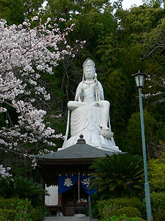

身代わり観音/佐賀県江北町
長崎本線の肥前山口駅に程近い東照寺に鎮座する大観音。
観音さんは本堂の裏手の小高い山の上におわす。
この大観音の名前は身代わり観音。
何の身代わりをしてくれる観音さんなのかは知らないが、きっと諸々の災厄を受け止めてくれるんでしょう。ありがたやありがたや。
大観音としては珍しい半跏像だ。
形状としては六角形の台座の上に円筒型のスツールに片足を組んで座っているような姿勢。

台座高9尺（2.7メートル）、椅子込みの像高が1丈2尺（3.6メートル）、合わせて2丈1尺（6.3メートル）。
半跏像で1丈2尺の大きさというのは大仏の定義である「立って丈六、座って八尺」という掟に照らし合わせてみても微妙なところかと思われるが、ま、台座も大きいし見た目凄く立派なので大仏と言い切ってしまって全然OKだと思います。
観音さんの前には小さなお堂があり、台座の裏にまわってみると扉が付いていたが鍵がかかっており内部の様子は伺い知れない。
気になったのは六角形の台座はともかく円筒型の椅子のようなモノ。この中にも小部屋があったりするのだろうか。ないか。
宝冠の細密な造りが印象的だ。見ればネックレスなども御召しになったりなんかして、なかなかオシャレな観音様である。
遠目、スリムなのに近くから見上げると結構ボリューミー。
仏ヂカラに満ち満ちている。
ここの観音様が建てられたのが昭和28年。
以前は銀ペイントだったそうだが今は御覧の通り、落ち着いた白でコーディネートされてます。
ところで
この観音さんの作者は福崎日精という仏師だそうな。
福崎…日精…どこかで聞いた事があるような…
あっ、新潟の弘願寺の大弘法の原型師じゃないですか！
氏は戦前戦後を通じて数々のコンクリ像（大きめ）をつくった仏師らしい。
詳細は分からないが、岡山や岐阜などあちこちにコンクリ像を建立しているようだ。
こうしてコンクリ大仏史に新たなる1ページを刻むべく仏師が急浮上！
今後、週に1度は福崎氏の事を考えながら生きて行こうかと思います（多分）。
2006.4.
珍寺大道場 HOME